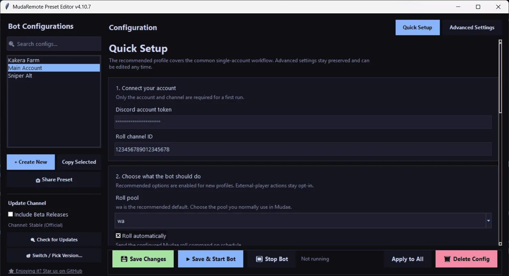

Roll'u kaçırmaz
Hakkın yenilendiği an roll atar, seçtiğin zamanlamaya uyar, belirlediğin saatlerde sessiz kalır.
Mudae autoclaimer · auto roller · kakera toplayıcı
MudaRemote roll hakkın dolunca roll atar, istediğin karakterleri claim'ler ve işine yarayan kakera'yı toplar. Windows ve Android'de ücretsiz, açık kaynak. Pro onu bulutta çalıştırır, bilgisayarın kapalı kalabilir.
Ne yapıyor
Kuralları bir kere, normal bir masaüstü uygulamasında ayarlıyorsun. JSON düzenlemek yok, Python kurmak yok.

Hakkın yenilendiği an roll atar, seçtiğin zamanlamaya uyar, belirlediğin saatlerde sessiz kalır.
Wishlist'teki karakterler, takip ettiğin seriler ya da belirlediğin kakera değerinin üstündekiler. Gerisine dokunmaz.
Seçtiğin kakera renklerine tepki verir, power'ını takip eder ve onu boş yere harcamaz.
Günlük kakera, claim reset'i ve bağlı komutlar sen hatırlayınca değil, mantıklı olduğunda çalışır.
Birkaç preset'i aynı anda çalıştırır, aynı roll için birbirleriyle yarışmak yerine koordine olurlar.
Kanalda insanlar konuşurken bekleyebilir. Daha az göze batar, daha az sinir bozar.
Başlamadan önce oku. MudaRemote bir selfbot. Selfbot kullanmak Discord Hizmet Şartları'na aykırı ve bu yüzden hesap banlanıyor. Gecikmeler, sessiz saatler ve kanal hareketi kontrolü ban riskini azaltır, sıfırlamaz. Kaybetmeyi göze alabileceğin bir hesapla kullan.
Neden bulut
Aynı açık kaynak bot, bir sunucuda. Bilgisayarın kapalıyken bile aynı uygulamadan, nereden istersen kontrol ediyorsun.
21:00 Roll round started, 10 rolls
21:01 Claimed Makima · wishlist
21:01 Kakera collected · purple
21:03 Missed Frieren · claimed by someone else first
21:05 Rolls done · next reset 22:00
21:40 Connection dropped · reconnected in 6s
Fiyatlar
Zaten aylık $5 ile destek oluyorsan Pro'yu kalıcı olarak bu fiyattan kullanırsın.
ya da yıllık $50
Pro kapalı betada. Ödeme GitHub Sponsors üzerinden, erişim Discord'dan veriliyor. Ayrıntılı karşılaştırma ve iade koşulları.
SSS
Yiyebilirsin. MudaRemote bir selfbot ve Discord selfbot'ları banlıyor. İnsana benzeyen zamanlama, sessiz saatler ve kanal kontrolü ban riskini azaltır ama hiçbir araç yakalanmayacağını garanti edemez. Selfbot'unun fark edilmediğini söyleyen biri sana bir şey satıyordur.
Kaybedince üzüleceğin bir hesapta çalıştırma.
Evet. MIT lisanslı, deneme sürümü değil, hiçbir özellik Pro'ya kilitli değil. Pro sadece sunucuyu ve bulut özelliklerini ekliyor.
Botun nerede çalıştığı. Ücretsiz sürüm bilgisayarında ya da Android telefonunda çalışır, onlar kapanınca o da durur. Pro aynı botu sunucuda çalıştırır, üstüne aktivite akışı, AI preset asistanı ve otomatik kurtarma ekler.
Hayır. Windows'ta tek bir .exe indirip açıyorsun. Hızlı Kurulum token'ını, kanalı ve neyi claim'lemek istediğini soruyor. Android 8.0 ve üstü için bir Android uygulaması da var.
O SmartScreen. Sürümler henüz kod imzalı değil, Windows onları tanımıyor. Ek bilgi, sonra Yine de çalıştır. Hazır dosyaya güvenmek istemiyorsan kaynak kod GitHub'da, kendin derleyebilirsin.
Evet. Selfbot senin hesabınla giriş yapıyor, başka yolu yok. Token sunucuda şifreli saklanıyor ve AI asistanına asla gösterilmiyor. Ayrıntılar gizlilik politikasında, İngilizce.
İstediğin katmanı GitHub Sponsors'ta seç, sonra Discord sunucusundaki #pro-request kanalına GitHub adınla yaz. Bir giriş bilgisi ve anahtar gelir. Kapalı beta boyunca erişim elle veriliyor.
Oluyor, Mudae da Discord da bir şeyleri değiştiriyor. Discord'da bildir ya da GitHub'da issue aç. Düzeltme genelde yeni bir sürümle geliyor ve uygulama yeni sürüm çıkınca haber veriyor.
İşini görüyorsa onunla devam et. Bilgisayarı açık bırakmaktan sıkılırsan Pro orada.